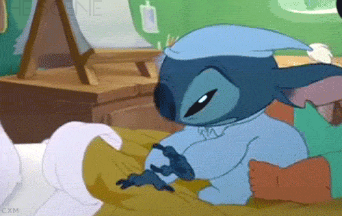

На этой неделе нас ждал предпросмотр по креативному проектированию. Задания начали становиться сложнее: мы приступили к созданию логотипов, на программировании начали проходить селекторы, а также огоньку задавали футурология (где я добровольно взялась за презентацию) и социология (где регулярно проходила ярмарка личных мнений, из-за динамичности которой я начала прием глицина).

В целом, в группе все было хорошо. Мы начали брать совместные проекты по общеобразовательным дисциплинам, понимая темп работы друг друга и уже составляя какое-то впечатление о работе тех, с кем бы нам хотелось делать что-то вместе.
На креативном проектировании мы корректировали наши работы, много времени уходило на то, чтобы сделать их понятными, более чистыми и качественными. На арт-практике мы изучали Sketch (с прискорбием поняла, что бесплатный период использования этой программы у меня закончился еще летом, было немного больно), на программировании началось что-то очень сложное, надо было угнаться за всем, получалось не очень, сон начал страдать.
С одногруппниками уловили момент, когда начались вопросы по программированию и начали заниматься вместе. Назвали группу тех, кто занимался в выходные "Аштимель сквадом", а еще гопнули кофейню недалеко от Школы Дизайна на предмет существования кофейных росточков: криминалить нужно не только на социологии, рассказывая о своей жизни вместо изученной дома главы, а еще и в реальной жизни.